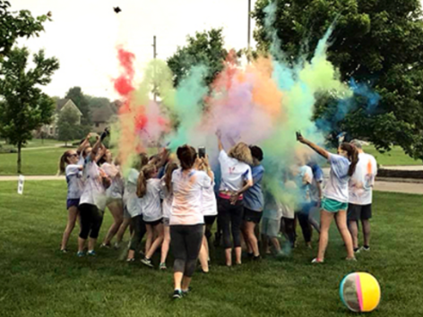
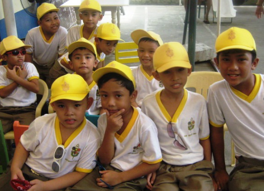
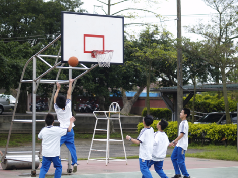

WELCOME TO VICENTE D. TRINIDAD NATIONAL HIGH SCHOOL
“Driven by Passion for Excellence in Holistic Education”
“Vicente D. Trinidad High School is envisioned to produce efficient, effective, functional and productive citizens in a value-laden teaching-learning environment and within a technology-driven society. It seeks to provide an excellent quality of basic education services that are accessible relevant and equitable to the learners.”
Start a journey
HISTORY OF THE SCHOOL
“To celebrate and revisit the school history and to reconnect with the continuing journey of the school, we briefly step back in time and trace the steps.”
“Vicente D. Trinidad High School had its humble beginning in 1969 as Ajat Barrio High School which was established at the ground of Iguig Central School. The founder of the school, the late Vicente D. Trinidad, felt the great need for education of the municipality especially the youth. He strongly believed that it is education that will start transforming dreams into realities. Thus, the realization of this institution during his time as the municipal mayor.”
“The school started with a handful population offering first to third year levels during its first year of operation. Due to the increased enrolment indicative of its success, the site was transferred to a hilltop near the church. This paved way for a greater commitment of the school to the community and gave birth to Iguig Municipal High School following its ground breaking which was materialized on February 14, 1970. The designated date to commemorate the founding anniversary of the school.”

The name of the school was eventually changed to Iguig Barangay High School after the visit of Pedro Tamesis Orata, known as the “Father of Barangay High Schools” in the following year. The idea was patterned after his creative work in education, particularly the conception and promotion of barangay high schools for rural Filipino youth in the country.
In 1971, the school produced its first eight graduates branded as “The Magic 8”. The school witnessed its first commencement exercise where it is located at present utilizing its first building ever built on the left wing of the school ground adjacent the school's memorial stage. Additional buildings were put up near the area succeeding the increased population of the school.
Inspired by the founder's vision for education, the school continually expanded its infrastructure and enriched its academic programs and curricular offerings aligned with the needs of the community. It offered first to fourth year levels with 14 sections in its full operation.
Despite changing educational landscapes that spanned before time, it continuously strived in the mainstream of educative purpose. The name of the school was later changed to Iguig High School in 1987.

It was in 1988 through DECS order No. 44 that the school was granted a national high school status pursuant to Republic Act No. 6655, An Act Establishing and Providing for a Free Public Secondary Education and other Purposes. Consequently, the name of the school was changed to Iguig National High School.
In October, 2007, the Sangguniang Bayan of Iguig adopted a resolution indorsing the change and adoption of new name for the school. Municipal Ordinance No. 33 was enacted changing the name of the school to Vicente D. Trinidad National High School in honour of its founder.
In 2010, the school opened its extension classes at Sta. Rosa, Iguig, Cagayan which now stands as a separate school named after the wife of the founder, Caridad B. Trinidad High School.
In January 2021, the school marked another milestone as it was granted the implementing unit status by the Department of Budget and Management (DBM) after complying with the set requirements. There’s a change in the flow of its fiscal releases as the fund directly comes from the national government through the Department of Budget and Management (DBM).
